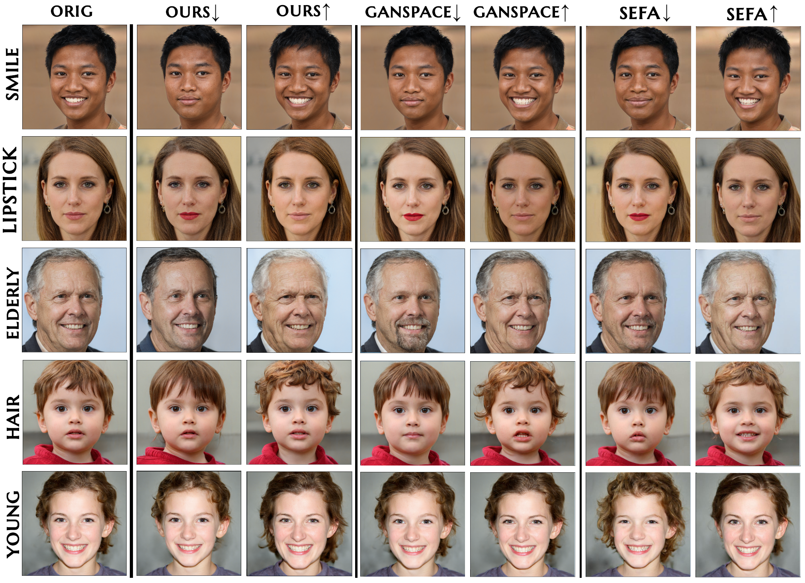

Zoom
Using nerfies you can create fun visual effects. This Dolly zoom effect would be impossible without nerfies since it would require going through a wall.
Recent research has shown that it is possible to find interpretable directions in the latent spaces of pre-trained Generative Adversarial Networks (GANs). These directions enable controllable image generation and support a wide range of semantic editing operations, such as zoom or rotation. The discovery of such directions is often done in a supervised or semi-supervised manner and requires manual annotations which limits their use in practice. In comparison, unsupervised discovery allows finding subtle directions that are difficult to detect a priori.
In this work, we propose a contrastive learning-based approach to discover semantic directions in the latent space of pre-trained GANs in a selfsupervised manner. Our approach finds semantically meaningful dimensions compatible with state-of-the-art methods.
Our visual analysis shows that the directions learned from the one ImageNet class are applicable to a variety of ImageNet classes
Using nerfies you can create fun visual effects. This Dolly zoom effect would be impossible without nerfies since it would require going through a wall.
As a byproduct of our method, we can also solve the matting problem by ignoring samples that fall outside of a bounding box during rendering.
Using nerfies you can create fun visual effects. This Dolly zoom effect would be impossible without nerfies since it would require going through a wall.
As a byproduct of our method, we can also solve the matting problem by ignoring samples that fall outside of a bounding box during rendering.
We can also animate the scene by interpolating the deformation latent codes of two input frames. Use the slider here to linearly interpolate between the left frame and the right frame.

Start Frame

End Frame
Each latent code is passed through direction models and up to a target feature layer of the GAN to obtain intermediate representations of edited codes. Then, the effects of direction models are computed by subtracting the representation of the original latent code. Finally, pairs produced by the same model are considered as positive, and others as negative, in a contrastive loss.
We compare how the directions found on FFHQ differ across methods. Figure shows the visual comparison between several directions found in common by all methods, including the directions Smile, Lipstick, Elderly, Curly Hair , and Young.
@article{DBLP:journals/corr/abs-2104-00820,
author = {Oguz Kaan Y{\"{u}}ksel and
Enis Simsar and
Ezgi G{\"{u}}lperi Er and
Pinar Yanardag},
title = {LatentCLR: {A} Contrastive Learning Approach for Unsupervised Discovery
of Interpretable Directions},
journal = {CoRR},
volume = {abs/2104.00820},
year = {2021},
url = {https://arxiv.org/abs/2104.00820},
eprinttype = {arXiv},
eprint = {2104.00820},
timestamp = {Mon, 12 Apr 2021 16:14:56 +0200},
biburl = {https://dblp.org/rec/journals/corr/abs-2104-00820.bib},
bibsource = {dblp computer science bibliography, https://dblp.org}
}